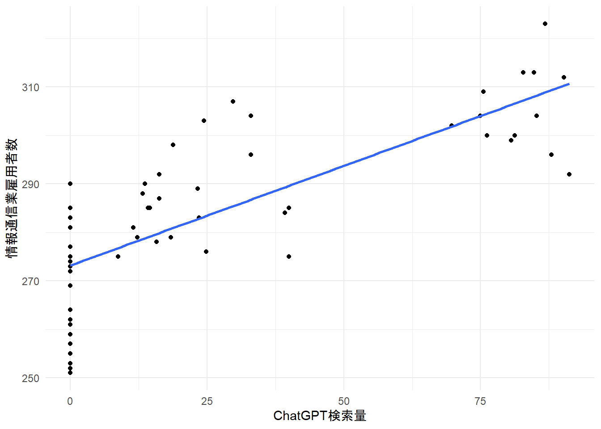

df <- readRDS("df_clean.rds")regression
library(dplyr)
library(lubridate)
library(readr)
trends <- read.csv("multitimeline.csv")# 日付をDate型に変換
trends$日付 <- as.Date(trends$日付)
# 「1 未満」などを1として扱う
trends$ChatGPT検索量 <- gsub(" .*", "", trends$ChatGPT検索量)
trends$ChatGPT検索量 <- as.numeric(trends$ChatGPT検索量)
# 年月を作成
trends <- trends %>%
mutate(
西暦 = year(日付),
月数 = month(日付)
)trends_month <- trends %>%
group_by(西暦, 月数) %>%
summarise(
ChatGPT検索量 = mean(ChatGPT検索量, na.rm = TRUE),
.groups = "drop"
)library(stringr)
# 年の空欄を補完
df$年 <- zoo::na.locf(df$年)
# 月
df$月数 <- as.numeric(str_extract(df$月, "\\d+"))
# 和暦→西暦
df$西暦 <- ifelse(
grepl("平成", df$年),
as.numeric(str_extract(df$年, "\\d+")) + 1988,
as.numeric(str_extract(df$年, "\\d+")) + 2018
)df <- left_join(
df,
trends_month,
by = c("西暦", "月数")
)df7 <- df %>%
filter(年月 >= as.Date("2021-07-01"))library(ggplot2)
ggplot(df7,
aes(
x = ChatGPT検索量,
y = 情報通信業雇用者数
)) +
geom_point() +
geom_smooth(
method = "lm",
se = FALSE
) +
theme_minimal()`geom_smooth()` using formula = 'y ~ x'
cor(
df7$ChatGPT検索量,
df7$情報通信業雇用者数,
use = "complete.obs"
)[1] 0.7780694#相関ありcor.test(
df7$ChatGPT検索量,
df7$情報通信業雇用者数
)
Pearson's product-moment correlation
data: df7$ChatGPT検索量 and df7$情報通信業雇用者数
t = 9.2689, df = 56, p-value = 6.649e-13
alternative hypothesis: true correlation is not equal to 0
95 percent confidence interval:
0.6505075 0.8629387
sample estimates:
cor
0.7780694 library(dplyr)
df7 <- df7 %>%
arrange(年月) %>%
mutate(
ChatGPT_lag3 =
lag(ChatGPT検索量, 3)
)
model <- lm(
情報通信業雇用者数 ~ ChatGPT_lag3,
data = df7
)
summary(model)
Call:
lm(formula = 情報通信業雇用者数 ~ ChatGPT_lag3, data = df7)
Residuals:
Min 1Q Median 3Q Max
-25.2886 -5.7344 0.7114 7.8478 21.4568
Coefficients:
Estimate Std. Error t value Pr(>|t|)
(Intercept) 276.28861 1.95919 141.022 < 2e-16 ***
ChatGPT_lag3 0.39381 0.05158 7.635 4.3e-10 ***
---
Signif. codes: 0 '***' 0.001 '**' 0.01 '*' 0.05 '.' 0.1 ' ' 1
Residual standard error: 11.39 on 53 degrees of freedom
(3 observations deleted due to missingness)
Multiple R-squared: 0.5238, Adjusted R-squared: 0.5148
F-statistic: 58.29 on 1 and 53 DF, p-value: 4.302e-10library(dplyr)
df7 <- df7 %>%
arrange(年月) %>%
mutate(月番号 = row_number())
model2 <- lm(
情報通信業雇用者数 ~ ChatGPT_lag3 + 月番号,
data = df7
)
summary(model2)
Call:
lm(formula = 情報通信業雇用者数 ~ ChatGPT_lag3 + 月番号,
data = df7)
Residuals:
Min 1Q Median 3Q Max
-22.528 -6.178 1.669 5.832 19.234
Coefficients:
Estimate Std. Error t value Pr(>|t|)
(Intercept) 260.44696 3.79729 68.588 < 2e-16 ***
ChatGPT_lag3 0.02240 0.09123 0.246 0.807
月番号 0.79375 0.17104 4.641 2.39e-05 ***
---
Signif. codes: 0 '***' 0.001 '**' 0.01 '*' 0.05 '.' 0.1 ' ' 1
Residual standard error: 9.666 on 52 degrees of freedom
(3 observations deleted due to missingness)
Multiple R-squared: 0.6632, Adjusted R-squared: 0.6503
F-statistic: 51.2 on 2 and 52 DF, p-value: 5.135e-13